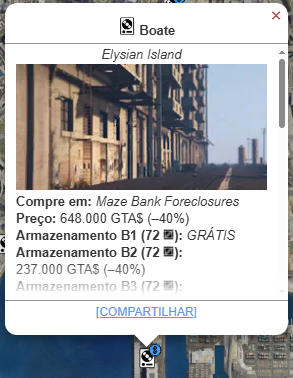
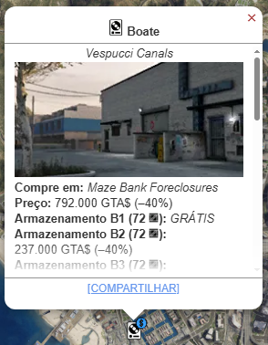
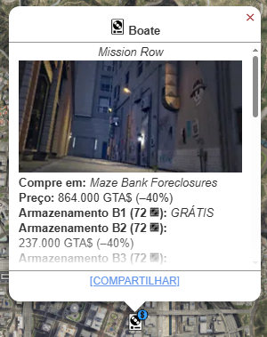
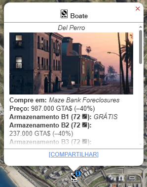
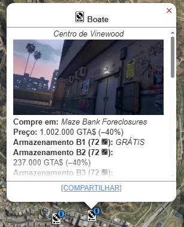
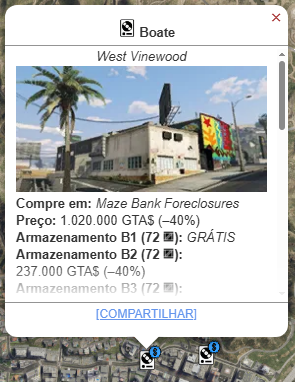

Boate
O Esquema da Boate é um dos negócios de renda mais elevada e com o maior potencial de lucro passivo no GTA Online, servindo como um centro de operações para acumular bens de outros negócios ilegais que você já possui.

Metodo De Obter
Você pode comprar uma Boate no Maze Bank Foreclosures, que você pode acessar pelo navegador da Internet no seu smartphone. O site pode ser encontrado na aba Dinheiro e Serviços ou inserindo o seguinte URL no seu navegador: www.maze-bankforeclosures.com.
No total, existem 10 Boates disponíveis para compra em Los Santos, com preços que variam drasticamente com base na localização e conveniência.
- Elysian: $ 1.080.000 
- Los Santos International Airport: $ 1.135.000
- Vespucci Canals: $ 1.320.000 
- Cypress Flats: $ 1.370.000
- Mission Row: $ 1.440.000 
- La Mesa: $ 1.500.000
- Strawberry: $ 1.525.000
- Del Perro: $ 1.645.000 
- Downtown Vinewood: $ 1.670.000 
- West Vinewwod: $ 1.700.000 


Melhorias e Personalizações
Estilo
- Estilo Cinza (Grátis)
- Estilo Azul ($ 225.000)
- Estilo Roxo ($ 300.000)
Iluminação
- Clássico (Grátis)
- Catedral ($ 88.000)
- Tempestade de Iluminação ($ 140.000)
- Aumento ($ 217.500)
- Deslumbrar ($ 295.000)
Nome
- Ômega (Gratis)
- Gefangnis ($ 33.500)
- Paradise ($ 33.500)
- Studio Los Santos ($ 33.500)
- Maisonette Los Santos ($ 33.500)
- The Palace ($ 33.500)
- Galaxy ($ 33.500)
- Technologie ($ 33.500)
- Tony's Funhuse ($ 33.500)
Armazenamento e Garagem
- +2° Piso ($ 395.000)
- +3° Piso ($ 809.750)
- +4° Piso ($ 1.245.250)
- +5° Piso ($ 1.702.550)
- Garagem 2° Andar ($ 140.000)
- Garagem 3° Andar ($ 287.000)
- Garagem 4° Andar ($ 441.350)
Dançarinos
▸ "Underground: shorts curtos, pintura corporal neon e bastante ritmo"
- Duas Mulheres ($ 213.500)
- Dois Homens ($ 213.500)
- Mulher + Homen ($ 233.500)
▸ "Transgressive: nada além de uma atitude mal-humorada e apenas couro para se apresentar"
- Duas Mulheres ($ 220.000)
- Dois Homens ($ 220.000)
- Homen + Mulher ($ 240.000)
▸ Grandeur: aplicam-se regras burlescas: olhe, mas não toque
- Duas Mulheres ($ 235.000)
- Dois Homens ($ 235.000)
- Mulher + Homen ($ 255.000)
Gelo Seco
▸ "Adicione atmosfera instantânea à sua pista de dança durante os momentos-chave do set do seu DJ."
- Gelo seco ($ 345.000)
DJ Residente
- Solomun
- Dixon
- Tales Of Us
- The Black Madona
Melhorias
- Melhoria de Equipamento: $ 1.425.000
- Melhoria de Segurança: $ 695.000
- Melhoria de Popularidade : $ 300.000
- Armazenamento de Armazém (B2, B3, B4, B5): $ 1.077.000 - $ 1.700.000 / cada
- Técnico de Armazém (5 slots) Incluído
Aumenta a velocidade de produção da mercadoria do Armazém (lucro principal).
Reduz a chance de a Boate ser invadida (altamente recomendada para proteção).
Reduz a rapidez com que a popularidade diminui, otimizando o lucro do Cofre.
Adiciona espaço de armazenamento para a mercadoria, permitindo vendas maiore
Você pode contratar 5 técnicos que trabalham automaticamente, desde que você possua outros 5 negócios de motoqueiro (MC) ou o Hangar/Bunker.
Lucro
A Boate gera lucro de duas maneiras principais:
▸ Renda Passiva (Cofre da Boate)
- Rendimento: Depende da Popularidade da Boate.
- Gestão: É necessário fazer missões rápidas para manter a popularidade alta.
- Lucro Máximo: Com 100% de popularidade, o cofre acumula $ 50.000 por dia no jogo (48 minutos reais).
▸ Acúmulo de Carga (O Lucro Principal)
- Necessidade: Contratar Técnicos e designá-los aos seus outros negócios.
- Processo: Os técnicos acumulam automaticamente (sem suprimentos) bens de até 5 negócios em seu Depósito.
- Manutenção (Custo Gasto): A Boate não requer a compra de suprimentos para o Depósito, mas tem uma Taxa de Manutenção diária de ~$ 900.
▸ Venda (Estoque Cheio): Um estoque cheio de 360 caixas (com 5 técnicos designados) pode render:
- Lucro Líquido: Como não há custo de suprimentos, o lucro é próximo ao valor total da venda, ou seja, ~ $ 1.690.000.
Lucro Obtido do Esquema da Boate:
- Lucro Passivo Cofre $ 250.000 (Com popularidade 100%).
- Lucro de Carga (Venda completa): ~ $ 1.690.000 (Sem custos de suprimentos, em sessão privada).
O esquema da Boate é o negócio definitivo para ganhar dinheiro rapido, pois os técnicos fazem a produção sem sua intervenção ou compra de suprimentos.
Assista a este guia para saber mais sobre. Este vídeo explica como funciona o esquema e como gerenciar.
l